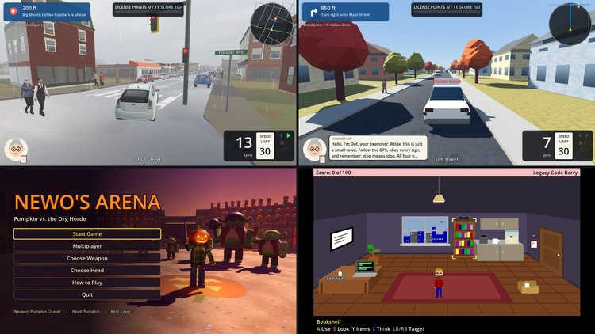

AI Projects Project Details
AI Projects
Browser games, sound toys, and design docs that Claude built.

Description
A collection of projects that Claude, Anthropic's AI model, built at my direction. Everything runs in the browser, and a gamepad is recommended for the games.
GamesMain Drag: Beacon - Run one errand on Beacon's Main Street. Fall weekends are the worst.Crash Course - A driving simulator that enforces New York State traffic regulations, with 4 road tests.Newo's Arena - Fight off Shrek-like creatures using a variety of weapons.E-Sport Legacy - Football, soccer, and ping pong.Legacy Code Barry - Software engineer loses job to AI.
Sound ToysBeatbox, Sequencer, and ENDO - Ideas from my /etc page, made real.
DocumentsBeacon Community Network: Hub Design - Neighborhood hubs that keep local messaging, websites, and libraries running over LoRa when the internet goes down, for the Beacon Community Network.